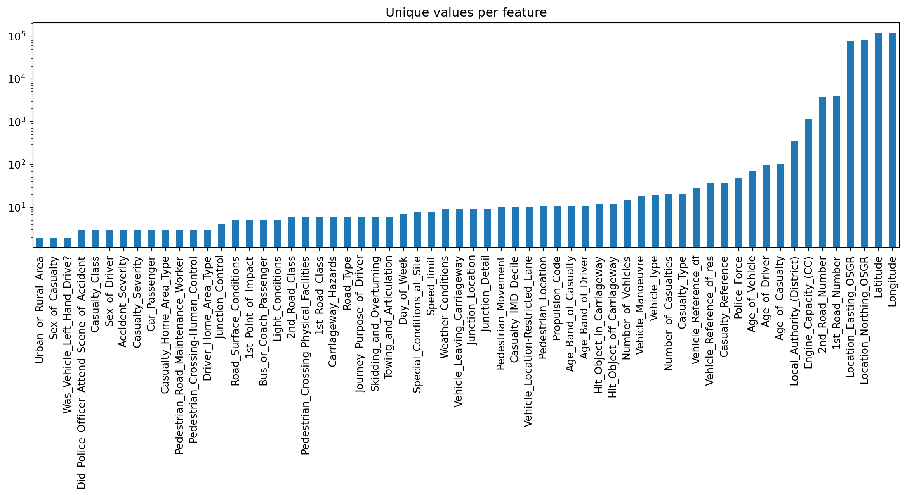

Exploratory Data Analysis in short known as EDA is way of summarizing, interpreting and visualizing the information hidden in rows and column format. Simply EDA is the key to getting insights from data.
Author
Vidyasagar Bhargava
Published
June 11, 2022
Why EDA is important ?
Usually we start any data science project with understanding the business problem and then we generate hypothesis. During hypothesis generation we look for factors which influence our dependent variable. EDA helps in confirming and validating those hypothesis.
It helps to find out unexpected pattern in data which must be taken into account, thereby suggesting some changes in planned analysis.
It helps in delivering data driven insights to business stakeholders by confirming they are asking the right questions and not biasing the investigation with their assumptions.
How to EDA
I divide exploratory data analysis in 3 parts of investigation.
Structure Investigation : Exploring shape and as well as data types.
Quality Investigation : To check general quality of datasets in regard to duplicates,missing values and unwanted entries.
Content Investigation : More indepth study of features and how they relate to each other.
Example Case
Let’s download some data and perform eda to bring insights as well know quality of the data.
from sklearn.datasets import fetch_openml# Download the dataset from openmldataset = fetch_openml(data_id=42803, as_frame=True)# Extract feature matrix X and show 5 random samplesdf_X = dataset["frame"]df_X
# Changes data type of 'Sex_of_Driver'df_X["Sex_of_Driver"] = df_X["Sex_of_Driver"].astype("float")
df_X.describe(exclude="number")
Accident_Index
Date
Time
Local_Authority_(Highway)
LSOA_of_Accident_Location
count
363243
319866
319822
319866
298758
unique
140056
365
1439
204
25979
top
201543P296025
14/02/2015
17:30
E10000017
E01028497
freq
1332
2144
2972
8457
1456
Structure of Numerical Features
# For each numerical feature compute number of unique entriesunique_values = df_X.select_dtypes(include="number").nunique().sort_values()# Plot information with y-axis in log-scaleunique_values.plot.bar(logy=True, figsize=(15, 4), title="Unique values per feature");

Quality Investigation
# Check number of duplicates while ignoring the index featuren_duplicates = df_X.drop(labels=["Accident_Index"], axis=1).duplicated().sum()print(f"You seem to have {n_duplicates} duplicates in your database.")
You seem to have 22 duplicates in your database.
# Extract column names of all features, except 'Accident_Index'columns_to_consider = df_X.drop(labels=["Accident_Index"], axis=1).columns# Drop duplicates based on 'columns_to_consider'df_X = df_X.drop_duplicates(subset=columns_to_consider)df_X.shape
(363221, 67)
Missing Values
import matplotlib.pyplot as pltplt.figure(figsize=(10, 8))plt.imshow(df_X.isna(), aspect="auto", interpolation="nearest", cmap="gray")plt.xlabel("Column Number")plt.ylabel("Sample Number");